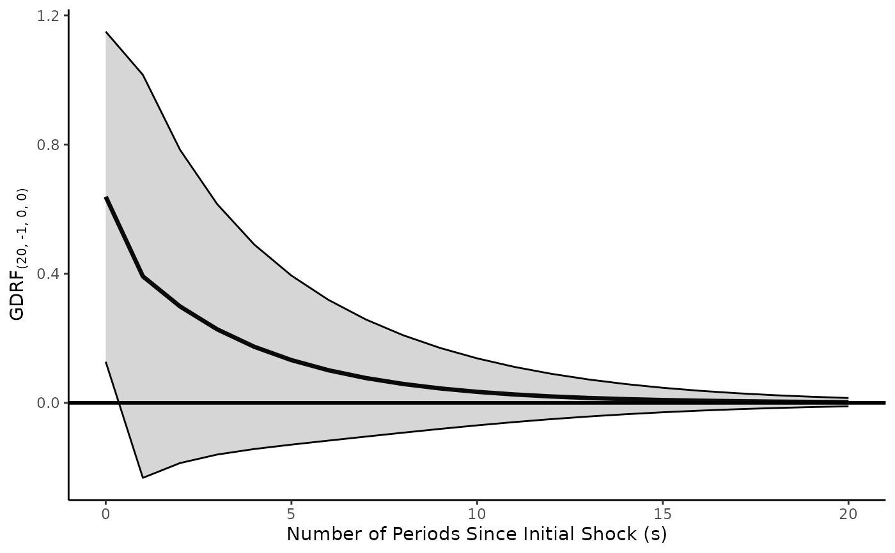
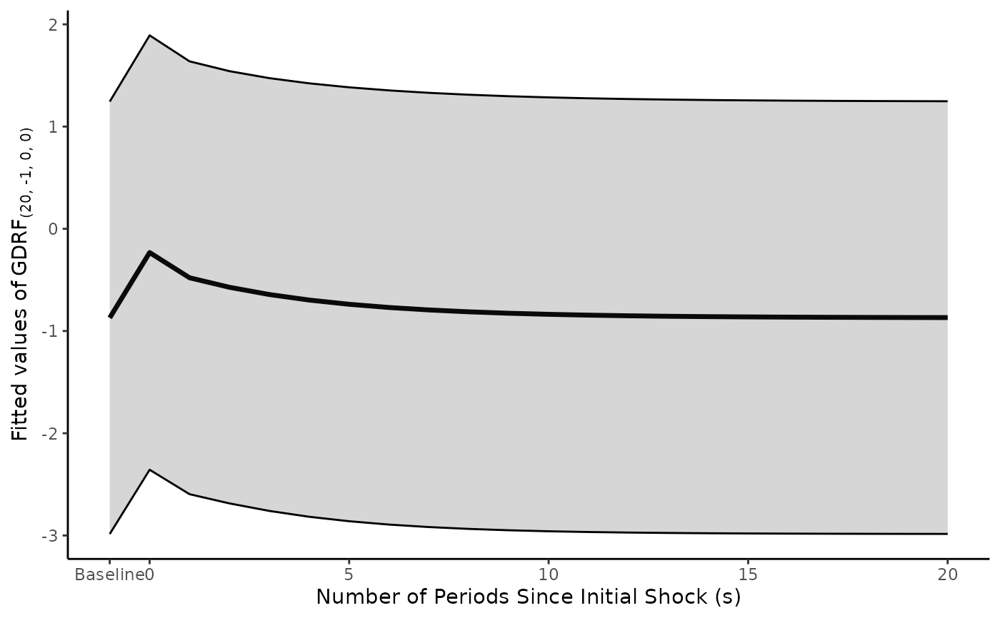

Evaluate (and possibly plot) the General Dynamic Response Function (GDRF) for an autoregressive distributed lag (ADL) model
Source:R/tseffects.R
GDRF.adl.plot.RdEvaluate (and possibly plot) the General Dynamic Response Function (GDRF) for an autoregressive distributed lag (ADL) model
Usage
GDRF.adl.plot(
model = NULL,
x.vrbl = NULL,
y.vrbl = NULL,
d.x = NULL,
d.y = NULL,
shock.history = "pulse",
inferences.y = "levels",
inferences.x = "levels",
effect.type = "marginal",
prediction.values = NULL,
baseline.y = NULL,
baseline.y.se = 0,
shock.size = 1,
dM.level = 0.95,
s.limit = 20,
se.type = "const",
return.data = FALSE,
return.plot = TRUE,
return.formulae = FALSE,
...
)Arguments
- model
the
lmmodel containing the ADL estimates- x.vrbl
a named numeric vector in which the names correspond to an independent variable and its lags and the numbers correspond to the specific lag order of each variable
- y.vrbl
a named numeric vector in which the names correspond to lags of the dependent variable and the numbers correspond to the specific lag order of each variable. Can be
NULLif the model has no lagged dependent variables- d.x
an integer describing how many times the independent variable was differenced before model estimation
- d.y
an integer describing how many times the dependent variable was differenced before model estimation
- shock.history
the desired shock history.
shock.historydetermines the shock history (h) (which can be expressed as an integer) that will be applied to the independent variable. -1 represents a pulse (Impulse Response Function). 0 represents a step (Step Response Function). These can also be specified viapulseandstep. For others, see Vande Kamp, Jordan, and Rajan. The default ispulse- inferences.y
does the user want resulting inferences about the dependent variable in
levelsor indifferences? (For y variables whered.yis 0, this is automatically levels.) The default islevels- inferences.x
does the user want to apply the shock history to the independent variable in
levelsor indifferences? (For x variables whered.xis 0, this is automatically levels.) The default islevels- effect.type
whether to return marginal effects or fitted values.
marginalreturns the GDRF as a marginal effect.fittedreturns the GDRF as a fitted value, relative to a baseline value of y. The default ismarginal- prediction.values
a named list of values for non-y variables in the model, used to calculate a steady-state baseline when
effect.type = "fitted"andd.y = 0andbaseline.yis not supplied. This allows for the calculation of model-based uncertainty. If any differenced variables are included in the model, they should be set to 0. Ignored whend.y > 0- baseline.y
a user-supplied baseline value of y in levels. For
d.y = 0, this overrides the steady-state calculation fromprediction.valuesif provided. Ford.y > 0withinferences.y = "levels", this is required (otherwise it is just marginal effects). Only used wheneffect.type = "fitted"- baseline.y.se
a user-supplied standard error for the baseline value of y (to suggest uncertainty around predictions). If supplied, this is added in quadrature to the standard errors of the GDRF estimates. Only used when
effect.type = "fitted"andinferences.y = "levels". The default is 0: in recognition that this is user-constructed uncertainty. Possible values would be the square root of the standard deviation of y (in levels)- shock.size
the size of the shock to x in the units of x. Only used when
effect.type = "fitted"; marginal effects are not scaled. Defaults to 1 (a marginal effect)- dM.level
a numeric significance level of the GDRF, calculated by the delta method. The default is 0.95
- s.limit
an integer for the number of periods to determine the GDRF (beginning at s = 0)
- se.type
a string for the type of standard error to extract from the model. The default is
const, but any argument tovcovHCfrom thesandwichpackage is accepted- return.data
logical to return the raw calculated GDRFs as a list element under
estimates. The default isFALSE- return.plot
logical to return the visualized GDRFs as a list element under
plot. The default isTRUE- return.formulae
logical to return the formulae for the GDRFs as a list element under
formulae(for the GDRFs) andbinomials(for the shock history). The default isFALSE- ...
other arguments to be passed to the call to plot
Examples
# ADL(1,1)
# Use the toy data to run an ADL. No argument is made this is well specified; it is just expository
model.toydata <- lm(y ~ l_1_y + x + l_1_x, data = toy.ts.interaction.data)
# Pulse effect of x
GDRF.adl.plot(model = model.toydata,
x.vrbl = c("x" = 0, "l_1_x" = 1),
y.vrbl = c("l_1_y" = 1),
d.x = 0,
d.y = 0,
shock.history = "pulse",
inferences.y = "levels",
inferences.x = "levels",
s.limit = 20)

# Step effect of x. You can store the data to draw your own plot,
# if you prefer
test.cumulative <- GDRF.adl.plot(model = model.toydata,
x.vrbl = c("x" = 0, "l_1_x" = 1),
y.vrbl = c("l_1_y" = 1),
d.x = 0,
d.y = 0,
shock.history = "step",
inferences.y = "levels",
inferences.x = "levels",
s.limit = 20)
test.cumulative$plot
#> NULL
# Fitted values: steady state baseline from prediction.values
GDRF.adl.plot(model = model.toydata,
x.vrbl = c("x" = 0, "l_1_x" = 1),
y.vrbl = c("l_1_y" = 1),
d.x = 0,
d.y = 0,
shock.history = "pulse",
inferences.y = "levels",
inferences.x = "levels",
effect.type = "fitted",
prediction.values = list("x" = 0, "l_1_x" = 0),
s.limit = 20)
#> Warning: If any differenced variables are included in the model, ensure they are set to 0 in prediction.values for a meaningful steady-state prediction
